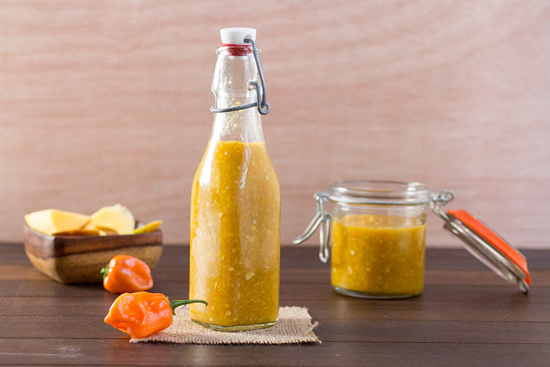

EN Mango habanero sauce | PL Sos mango habanero

EN
Description
Carribean hot sauce made with habanero peppers, mango, vinegar, honey and spices. Perfect for chicken wings and strips.
I was trying to replicate mango habanero sauce from polish Kura restaurant and it is almost indistinguishable!
Ingredients
- 5 habanero peppers
- 1 mango
- 1 small white onion
- 4 cloves garlic
- 1/2 cup apple cider vinegar
- 1/4 cup water
- 2 tablespoons honey
- 1/4 teaspoon cumin
- 1/2 teaspoon allspice
- 1 teaspoon ginger powder
- 1 teaspoon salt
Steps
- Add all ingredients to a food processor. Process until smooth.
- Add to a large pan and bring to a boil. Reduce heat and simmer for 10 minutes.
- Cool then transfer to serving bottles.
PL
Opis
Karaibski ostry sos zrobiony z papryczek habanero, mango, octu, miodu i przypraw. Idealny do skrzydełek i stripsów z kurczaka.
Starałem się odtworzyć przepis na sos mango habanero z restauracji Kura. Smak jest niemal nierozróżnialny!
Składniki
- 5 papryczek habanero
- 1 mango
- 1 mała cebula
- 4 ząbki czosnku
- 1/2 szklanki octu jabłkowego
- 1/4 szklanki wody
- 2 łyżki miodu
- 1/4 łyżeczku kminu rzymskiego
- 1/2 łyżeczki mielonego ziela angielskiego
- 1 łyżeczka mielonego imbiru
- 1 łyżeczka soli
Kroki
- Wrzuć wszystkie składniki do blendera. Blenduj do uzyskania gładkiej konsystencji.
- Przenieś sos do dużego rondla. Zagotuj. Zmniejsz płomień i gotuj jeszcze przez około 10 minut.
- Ostudź sos i przelej go do butelek.